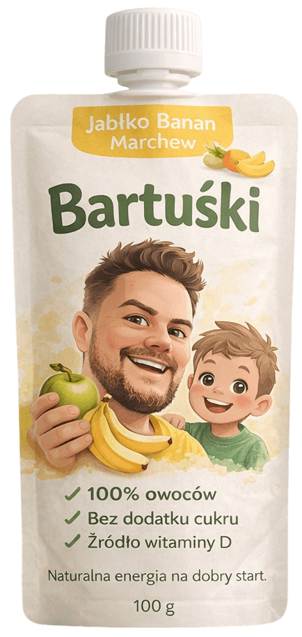

Naturalnie słodkie połączenie owoców i warzyw. Idealne dla najmłodszych – bez dodatku cukru, 100% owoców i warzyw w wygodnej formie 100 g.

Bartuśki to musy owocowe stworzone z myślą o dzieciach. Delikatna konsystencja, naturalny smak i skład oparty wyłącznie na owocach oraz warzywach – bez zbędnych dodatków.
Przecier jabłkowy, bananowy, marchewkowy, naturalna witamina D. Bez dodatku cukru. Zawiera naturalnie występujące cukry.
| Energia | 52 kcal |
| Tłuszcz | 0,2 g |
| Węglowodany | 11 g |
| Cukry | 9 g |
| Błonnik | 1,5 g |
| Białko | 0,5 g |
| Witamina D | 1,5 µg |